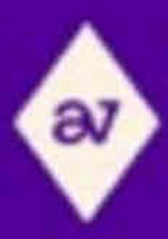

Trade Mark Journal No.2025/030 25 July 2025
UK00004195936 28 April 2025 (35,36)
Mark 1
Mark 2
Mark 3

Mark 4
- Class 35
- Retail and wholesale services connected with the sale of antiques, vintage products, and pre-owned goods, namely handbags and purses, jewellery, silver and silver plate and goods made therefrom, (namely ornaments, cookware and tableware, household utensils and containers, kitchen utensils and containers, jewellery, watches, cutlery, trophies, plates, dishes, bowls, trays, jugs, cups, coasters, silver hand tools, and decorative picture and mirror frames), cameras, watches, gold and goods made therefrom or coated therewith (namely gold and gold-plated jewellery, namely , ornaments, cookware and tableware, household utensils and containers, kitchen utensils and containers, jewellery, watches, cutlery, trophies, plates, dishes, bowls, trays, jugs, cups, coasters, silver hand tools, and decorative picture and mirror frames), medals and military badges and military memorabilia, toys, building blocks [toys], writing instruments, coins and currency, sunglasses, amber, smoking items and accessories therefor, clocks, masonic regalia and insignia, including aprons, collars, gloves, badges, emblems and other metal adornments, brass and brass goods (namely, ornaments, cookware and tableware, household utensils and containers, kitchen utensils and containers, jewellery, watches, cutlery, trophies, plates, dishes, bowls, trays, jugs, cups, coasters, silver hand tools, and decorative picture and mirror frames), diamonds, pewter, binoculars, vintage tableware, vintage hand tools and implements, enamel signs, second-hand and antique household goods (namely kitchens utensils and containers, cookware, picture frames, and containers), vintage collectables (including collectable household goods and decorative items, collectable printed matter and paper goods, antiques, memorabilia, decorations, and toys), vintage and collectible consumer electronics (including rotary phones and radios), computers, tablets, mobile phones, electronic watches, video game consoles, video games, accessories for tablets, phones, watches, video games consoles; the bringing together for the benefit of others a variety of antiques and vintage products and pre-owned goods, enabling customers to conveniently view, sell and purchase those goods from a trader specialising in the sale and purchase of such goods; purchasing services; services for the purchasing of antiques, vintage products, collectables, memorabilia and pre-owned goods from others; advertising; provision of space on a website for advertising goods and services of others; the provision of the aforesaid services online, or from or within retail units, or at markets and fairs and roadshows, or from mail order catalogues; information, advisory and consultancy services relating to any of the aforesaid and/ or relating to the purchase of antiques and vintage goods and pre-owned goods; organising trade fairs; organising trade fairs for the buying and selling of antiques and/ or vintage goods and/ or collectables and/ or memorabilia and/ or pre-owned goods.
- Class 36
- Valuation and appraisal services; valuation and appraisal services in relation to antiques, vintage products, collectables, memorabilia and pre-owned goods; valuation and appraisal services in relation to jewellery, silver and silver plate and goods made therefrom, cameras, watches, gold and goods made therefrom, medals and militaria, toys, writing instruments, coins and currency, sunglasses, amber, smoking items and paraphernalia, clocks, masonic regalia, brass and brass goods, diamonds, pewter, binoculars, vintage tableware, vintage tools and equipment and instruments, enamel signs, vintage homeware, vintage collectables, vintage electronics; information, advisory and consultancy services relating to the aforesaid.
VCC Trading Group Limited
Representative: Abion UK Limited